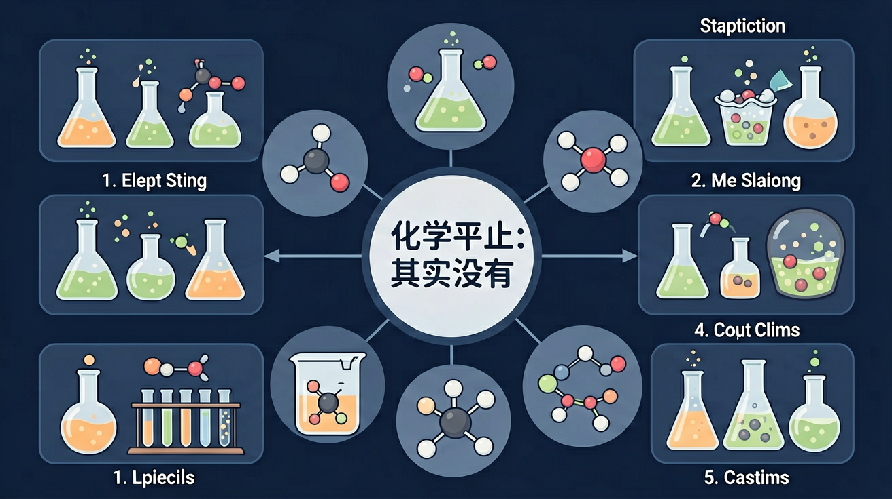

真实情境
可乐瓶里的气泡之谜
小华发现刚开盖的可乐会剧烈冒气泡，放置半小时后气泡减少但仍有少量持续产生。妈妈解释这是碳酸分解，但小华疑惑：为什么不是所有气泡一次性冒完？这与化学课本上'可逆反应'的描述有何联系？
已有经验
学生已掌握化学反应速率概念，知道二氧化碳气体产生现象
真正卡点
混淆'反应停止'与'动态平衡'的微观本质
本课任务
通过可乐气泡现象理解动态平衡特征
小华发现刚开盖的可乐会剧烈冒气泡，放置半小时后气泡减少但仍有少量持续产生。妈妈解释这是碳酸分解，但小华疑惑：为什么不是所有气泡一次性冒完？这与化学课本上'可逆反应'的描述有何联系？
学生已掌握化学反应速率概念，知道二氧化碳气体产生现象
混淆'反应停止'与'动态平衡'的微观本质
通过可乐气泡现象理解动态平衡特征
可逆反应在一定条件下会达到化学平衡：正反应速率等于逆反应速率，各物质浓度保持恒定，但微观上反应并未停止。平衡是相对的，条件改变后会建立新平衡。写“达到平衡”的判据时，优先用浓度/压强不再变化、正逆速率相等，而不是“反应停止”。
化学平衡的本质特征是？
为什么化学平衡是“动态平衡”，而不是反应完全停止？
先选一个你关心的问题。后面的例子、提示和 AI 学伴都会围绕这个问题来帮你推进。
选择或输入后，本课会围绕你的问题展开。
理解化学平衡的动态特征，掌握通过浓度商Q与平衡常数K比较判断反应方向的方法，培养变化观念与平衡思想素养
碘化氢分解实验：密闭容器中2HI(g)⇌H₂(g)+I₂(g)达平衡时，HI分解率为22.1%(440°C)，容器内各组分浓度保持恒定但微观反应持续进行
判断反应方向三步法：1.计算当前浓度商Q 2.查表获取该温度下平衡常数K 3.比较Q与K大小确定移动方向
常见错误：认为平衡时各物质浓度相等（实际是保持不变）；误将平衡常数表达式中的浓度直接代入初始浓度而非平衡浓度
课堂任务：请用“现象/文本/地图/实验数据 → 关键证据 → 学科解释 → 迁移应用”四步，重写一个关于「化学平衡：反应停止了吗？其实没有」的新问题。
如果你能解释“为什么化学平衡是“动态平衡”，而不是反应完全停止？”，这节课就真正过关了。
对给定反应，写出 Kc（或 Kp）表达式时用平衡浓度（分压），纯固体、纯液体不写入。温度不变则 K 不变；浓度、压强改变可能使平衡移动，但不足以单独改变 K。比较 Qc 与 K：Qc<K 正向进行，Qc>K 逆向进行，Qc=K 已平衡。
恒温下向已平衡体系加入生成物，K 如何变化？
转化率描述反应物转化的限度，与平衡位置有关；速率描述快慢，与催化剂、活化能等有关。催化剂同等加快正逆反应，缩短达平衡时间，但不改变平衡常数与平衡组成。分析题干时先分清问的是“更快”还是“更多/转化率更高”。
加入催化剂对已建立的化学平衡的影响是？
可逆反应中，正逆反应速率相等、各组分浓度保持不变的状态叫化学平衡，是动态平衡。平衡时反应并未停止。浓度商 Q 与平衡常数 K 比较可判断进行方向：Q＜K 向正反应，Q＞K 向逆反应，Q=K 达平衡。
判断平衡：直接标志是 v正=v逆；间接看组分浓度/百分含量不再变化。注意“相等”不是“反应停止”。改变条件后重新平衡叫平衡移动。
常见误区：常见误区是认为平衡后反应停止，或各物质浓度一定相等。浓度不变不等于浓度相等。
化学平衡的本质特征是？
本课任务：在可逆反应模拟中改变温度与浓度，观察正逆速率曲线何时相交、各物质数量何时稳定，用截图证据说明“动态平衡≠反应停止”。
写清自变量、因变量和至少两个保持不变的条件，避免同时改变多个因素后无法归因。
至少记录三组带单位的数据或三个可复查的现象，不用“变大了”“更明显”代替证据。
用本课公式、粒子模型或受力关系解释趋势，并指出结论成立所依赖的模型条件。
换一个参数或真实情境预测结果，再用仿真检验；若不一致，回查变量、单位和边界条件。

识别并写出本节核心定义、公式或分类标准。
把本课标准用于一个实验数据或真实生活场景。
设计一个反例，说明常见错误为什么站不住脚。
记忆锚点：平衡不是停，是 v正等于 v逆；宏观不变，微观不停。
易错提醒：常见错误：把“反应物和生成物浓度相等”当成平衡条件。平衡要求速率相等，不要求浓度相等。
不要只看结论。动手改变变量后，再用一句话解释画面为什么变了。